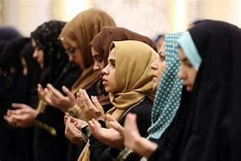
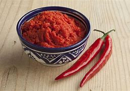
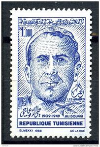

Located in North Africa’s Maghreb region, Tunisia is a sovereign nation with a population of around 11,516,189 individuals. The country has a rich culture that reflects nearly 3,000 years of history.
It is influenced by the cultures of ethnic groups that migrated to the nation from different parts of the globe.

 The cuisine of the country reflects the influences of the Mediterranean cuisine as well as that of its desert dwellers. The Tunisian dishes are known for their spicy fieriness. The couscous is the staple of the diet and is regarded as the national dish of the nation. It is made of cooked grains (usually semolina) and is served with vegetables or meat (usually lamb). The Tunisian dishes are flavored with a variety of herbs, spices, and olive oil. Harissa, a hot sauce made of garlic and red chili peppers, is very popular. Olive oil, tomatoes, cumin, and coriander are used to add flavors to the sauce. Seafood, especially fishes, is an important protein source in the Tunisian diet. Cabbages, turnips, chickpeas, carrots, pumpkin, etc., are some of the commonly consumed vegetables. The tajine is a kind of “quiche” prepared from beaten eggs and cheese and has vegetable or meat fillings. Fried, grilled or sautéed fish served with potato chips is a popular Tunisian dish.
The traditional dress for Tunisian men is called the jebba. It is adorned on special occasions. It is a sleeveless tunic that is worn over a shirt or vest and baggy trousers (seroual). A white jebba is worn in summer and a gray one in winter.
Simple trousers and shirts are worn by men on ordinary days. In winters, a heavy woolen cloak is usually worn. A headdress called the chechia is worn occasionally. It is a red felt hat with a black thread tassel.
Tunisian women in urban areas normally wear European style clothing. Most women wear a sefseri which is a white veil made of wool or silk. Women in rural areas often wear brightly colored dresses that are held at the waist by a belt.
A massive amount of jewelry is also worn. The ceremonial dress of Tunisian women varies regionally. One example is a heavily embroidered dress worn with a velvet jacket, lace pants, and a silk belt.

The written literature of the country features works in both Arabic and French. The former has a long history dating back to the 7th century when the Arabs invaded and ruled over Tunisia.
Tunisian literature in French has a relatively recent history and began in the 19th century with the establishment of the French protectorate in the region. The Arabic literary works are larger in volume and have higher literary quality.
Ali Douagi is one of the country’s leading literary figures. He wrote over 500 songs and poems and plays. Francophone literature was initially powered by both Arab Muslim authors and minority authors.
Tunisia is also known for the wide variety of craft products that are handcrafted in the different regions of the country.
Tunisian pottery is globally renowned. Tunisian ironwork is also appreciated for its intricacy and beauty.
The craft dates to the Andalusian era. The mosaics of Tunisia also trace their origin to ancient times and are greatly admired for their vibrant colors, patterns, and pictorial representations.
According to scholars, the music of Tunisia evolved in three phases. It was first influenced by music from the Middle East. Later, Andalusian music and Turkish music also shaped the music scene of the nation. The Western culture also had its role in shaping Tunisian music in recent times. The most notable style of Tunisian music is the Malouf which is performed using a variety of stringed and percussion instruments like fiddle, oud, darbuka. Tunisian music and dance are an integral part of society. Performances are common during the circumcision ceremonies, festivals, weddings, football games, concerts, etc. Tunisian cinema has also been well appreciated at the global level.
Football is Tunisia’s most popular sport. The country’s national football team has made significant achievements in the past and it won the 2004 African Cup of Nations. Handball and volleyball are two other popular spectator sports in Tunisia. The national handball team of the nation ranked fourth in the 2005 World Men's Handball Championship. Athletics, tennis, martial arts and rugby are also played.
Gender-based roles are prevalent in the traditional Tunisian society. Such roles are more prominently visible in the rural areas than in the cities and towns. Women are responsible for managing the household while men are regarded as the primary breadwinners.
Women in agricultural households also work in preserving the agricultural produce or spinning and weaving wool, etc. However, women working as agricultural labor are often paid lower wages than men involved in the same work.
Tunisian women in urban areas have entered the workforce in significant numbers. They hold important positions in several fields of employment. However, women still endure great stress in their attempts to follow a career path in a male-dominated society.
Marriages in Tunisia are either arranged by the family or are based on individual choice. Some preference for cousins can be seen. Marriages within the same status are encouraged.
After the engagement, a complex series of visits between the families of the would-be bride and groom follows. Disputes breaking out during this time might lead to the collapse of the engagement. The bride usually moves into the groom’s place for marriage.
Tunisian households are based on patriarchal beliefs. Families are usually small in size and headed by the eldest male. Although families are small in size, great importance is given to kinship beyond the nuclear family.
Mothers are primarily responsible for taking care of the children, especially when they are young. Education of both girls and boys is promoted by the Tunisian government.
Although child labor is uncommon, boys often start working as apprentices in their teenage years.
Tunisians generally have an egalitarian attitude in their interpersonal relations. Men visiting a friend’s house must not exhibit too much curiosity about the female members of the house. People also avoid visiting the homes of those lower than their status.
In some parts of the country, restrictions are imposed on the free movements of married women. They are also expected to wear traditional clothes and cover their head and body in public. However, these practices are now less uniform than in the past.